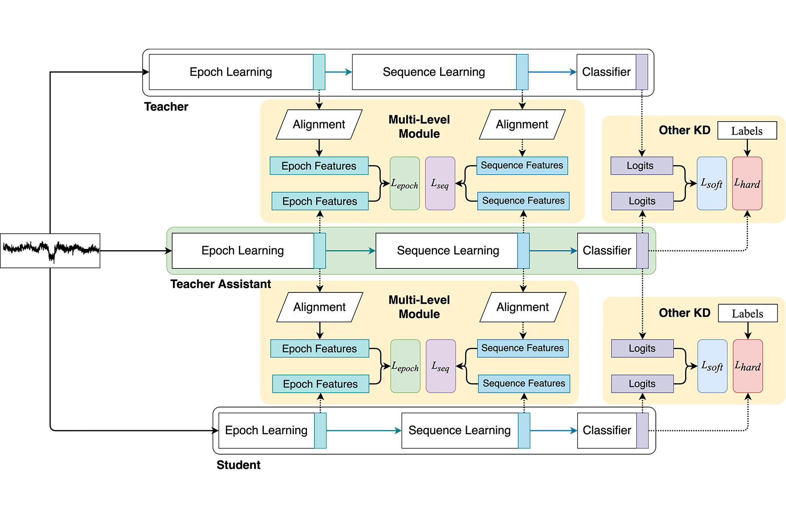
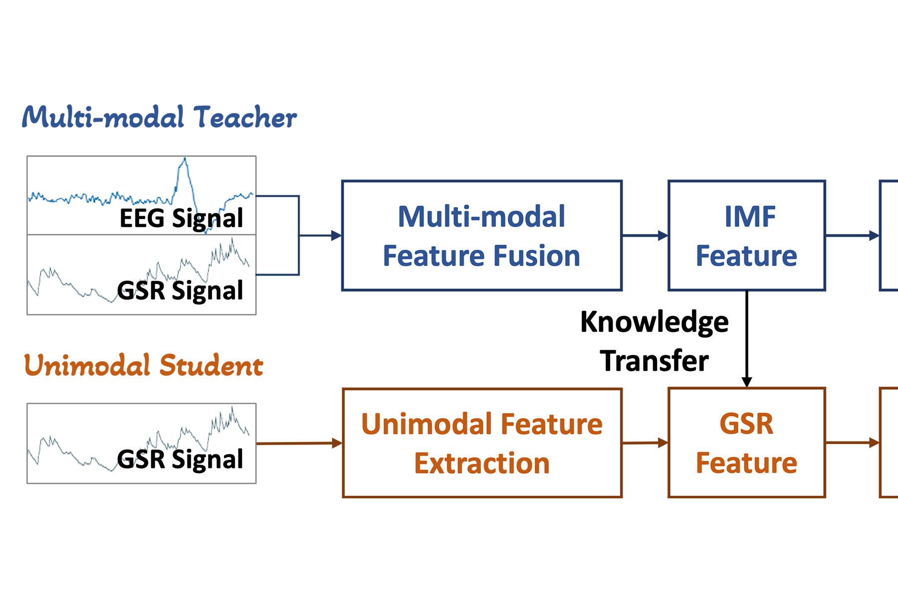

Publications

IJCAI 2023
Teacher Assistant-Based Knowledge Distillation Extracting Multi-level Features on Single Channel Sleep EEG
Heng Liang, Yucheng Liu, Haichao Wang, Ziyu Jia*

ACM Multimedia 2023
EmotionKD: A Cross-Modal Knowledge Distillation Framework for Emotion Recognition Based on Physiological Signals
Yucheng Liu, Ziyu Jia*, Haichao Wang